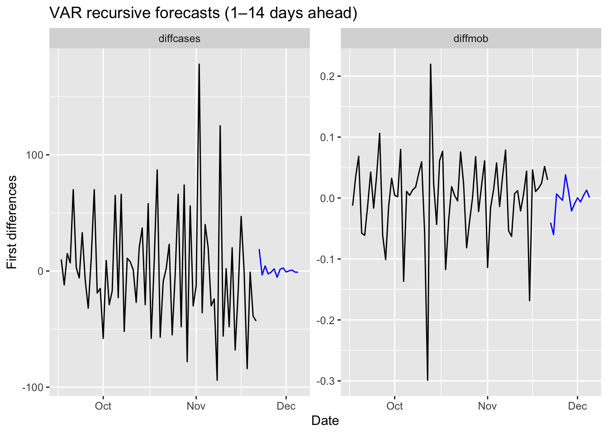
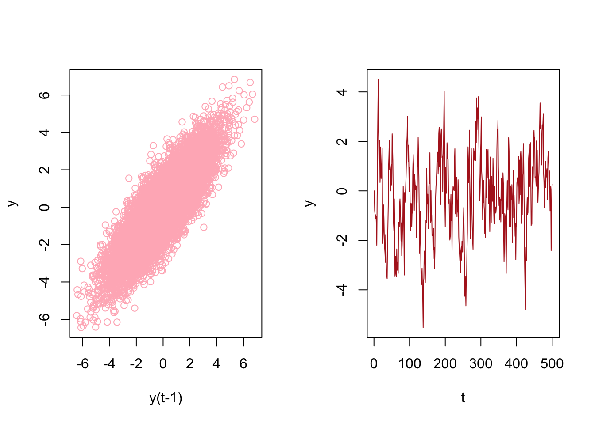
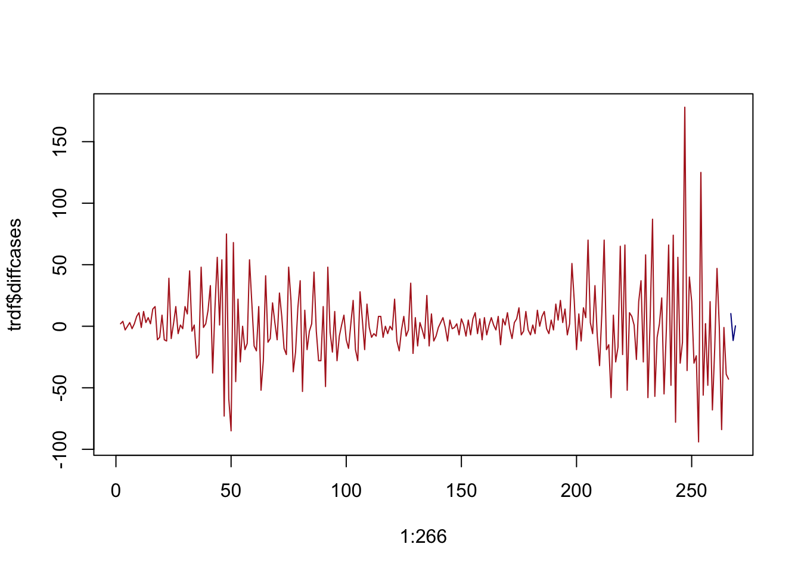
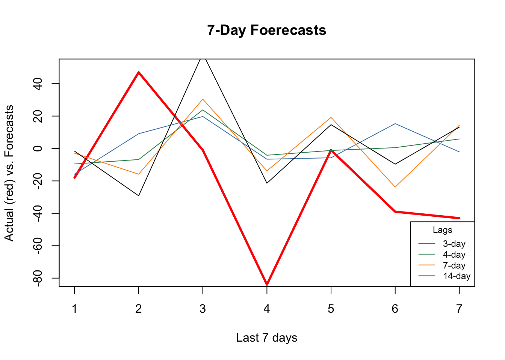
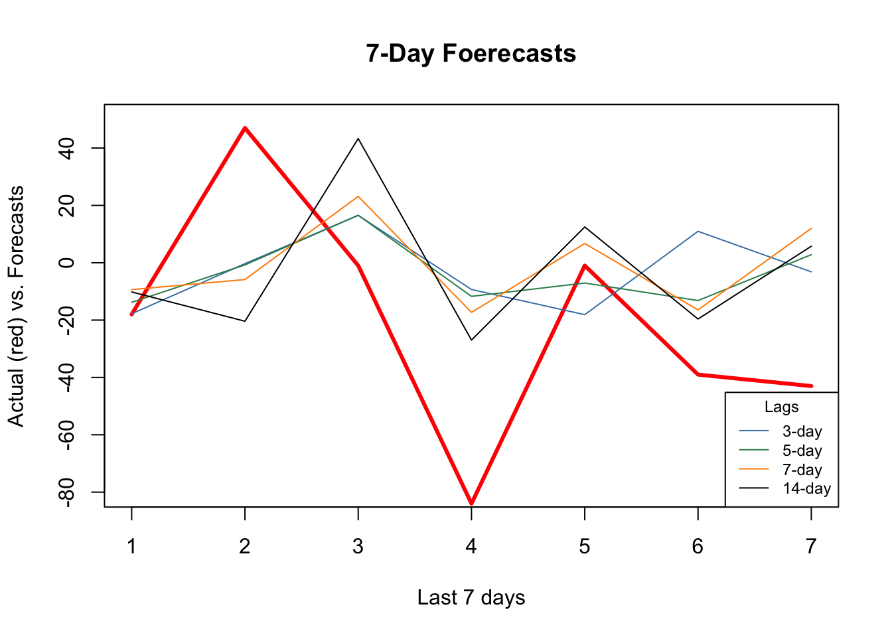
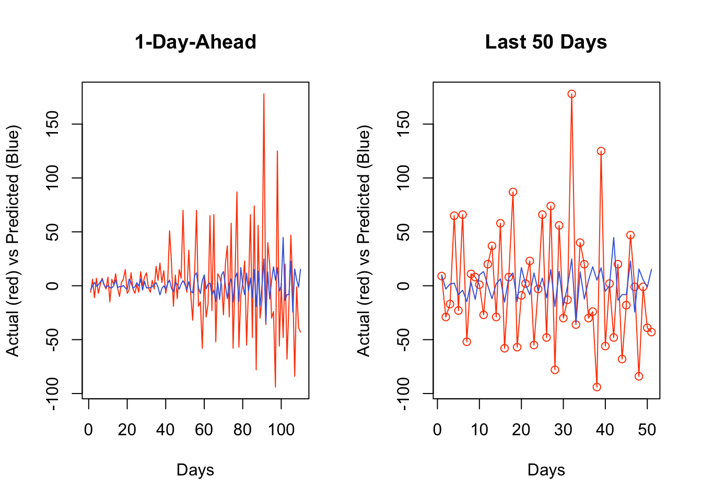
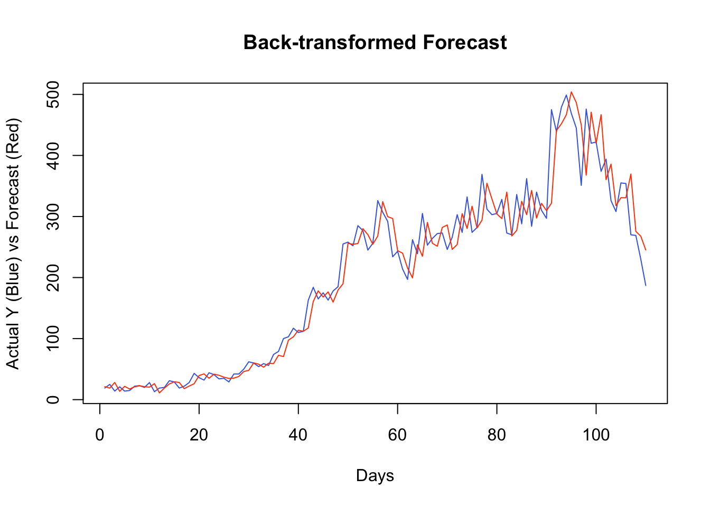

Chapter 29 Direct Forecasting with Random Forests
In this chapter, we will discuss the direct forecasting of time series data. We will start with the recursive forecasting and then move to the direct forecasting. We will use the Toronto COVID-19 data for our examples. We will also show how to use the Random Forest algorithm for direct forecasting.
29.1 Time Series Embedding for Direct Forecasting
Forecasting models generally employ direct forecasting, recursive forecasting, or a combination of both (Taieb and Hyndman, 2012). The key distinction between these methods lies in their approach to prediction accuracy and forecast variance, which in turn affects their suitability for different forecasting tasks.
Before exploring time series embedding for direct forecasting, let’s first review the two primary forecasting strategies.
- Recursive Forecasting:
- Uses a single parametric model, such as AR(1), to generate predictions step by step.
- The forecast for time \(t+1\) is first estimated, then used as an input for predicting \(t+2\), and so on.
- This iterative process can accumulate errors, leading to increasing uncertainty as the forecast horizon expands.
- It is particularly effective when the underlying time series follows a linear structure, but struggles when dealing with nonlinear dependencies.
- Direct Forecasting:
- Instead of iterating over previous predictions, direct forecasting builds separate models for each time step within the forecast horizon.
- This approach allows for nonparametric methods, such as machine learning algorithms, which can capture complex and nonlinear relationships in the data.
- However, direct forecasting often exhibits higher variance, especially as the forecast horizon increases, due to the need for estimating multiple models independently.
In multi-step forecasting, a common recursive approach involves using a single model—such as AR(1)—and iteratively substituting its own predictions to generate future values. Given a forecast horizon of \(h\), the model is applied recursively to estimate:
\[\begin{equation}
\begin{aligned}
\hat{y}_{t+1} &= f(y_t, y_{t-1}, \dots) \\
\hat{y}_{t+2} &= f(\hat{y}_{t+1}, y_t, \dots) \\
&\;\;\vdots \\
\hat{y}_{t+h} &= f(\hat{y}_{t+h-1}, \dots)
\end{aligned}
\end{equation}\]
where \(\hat{y}_{t+h}\) is the forecasted value at time \(t+h\), and \(f\) represents the forecasting model. The recursive nature of this approach can lead to error accumulation, particularly for longer forecast horizons.
Direct forecasting, in contrast, requires restructuring the dataset to create individual models for each future time step. This technique, known as time series embedding, transforms the original time series into a supervised learning problem, where each target variable corresponds to a specific future time step. The process involves:
- Creating lagged features from past observations.
- Training separate models for each step within the forecast horizon.
- Ensuring that data preprocessing aligns with the expected forecast structure.
By embedding time series data effectively, direct forecasting can provide more flexible and adaptive predictions, particularly in cases where relationships between past and future values are highly nonlinear.
Choosing between recursive and direct forecasting depends on the trade-off between bias and variance:
- Recursive forecasting leverages a single model but risks error accumulation over longer horizons.
- Direct forecasting reduces error propagation but requires estimating multiple models, increasing variance.
In practice, hybrid approaches combining both methods are often employed to balance predictive accuracy and robustness. This chapter explores time series embedding in depth, demonstrating how to effectively restructure data to implement direct forecasting models.
Let’s start with a simple AR(1) model to illustrate recursive multi-step forecasting:
\[\begin{equation} x_{t+1} = \alpha_0 + \phi_1 x_t + \epsilon_{t} \end{equation}\]
To generate forecasts for the next three periods, we recursively substitute predicted values into the model:
\[\begin{align} \hat{x}_{t+1} &= \hat{\alpha}_0 + \hat{\phi}_1 x_t \notag \\ \hat{x}_{t+2} &= \hat{\alpha}_0 + \hat{\phi}_1 \hat{x}_{t+1} \notag \\ \hat{x}_{t+3} &= \hat{\alpha}_0 + \hat{\phi}_1 \hat{x}_{t+2} \end{align}\]
Applying iterative substitution gives us the forecasts expressed in terms of \(x_t\):
\[\begin{align} \hat{x}_{t+1} &= \hat{\alpha}_0 + \hat{\phi}_1 x_t \quad \text{(1st period)} \notag \\ \hat{x}_{t+2} &= \hat{\alpha}_0 + \hat{\phi}_1 \hat{\alpha}_0 + \hat{\phi}_1^2 x_t \quad \text{(2nd period)} \notag \\ \hat{x}_{t+3} &= \hat{\alpha}_0 + \hat{\phi}_1 \hat{\alpha}_0 + \hat{\phi}_1^2 \hat{\alpha}_0 + \hat{\phi}_1^3 x_t \quad \text{(3rd period)} \end{align}\]
More generally, the \(h\)-step recursive forecast is:
\[\begin{equation} \hat{x}_{t+h} = \hat{\alpha}_0 \sum_{i=1}^{h} \hat{\phi}_1^{i-1} + \hat{\phi}_1^h x_t \end{equation}\]
This approach uses the same estimated model for every step ahead; only the inputs change. Thus, a single model suffices to generate forecasts for any horizon.
Alternatively, the direct forecasting strategy fits a separate model for each forecast horizon. For example, with AR(1)-type direct forecasts for three periods ahead:
\[\begin{align} x_{t+1} &= \alpha_0 + \alpha_1 x_t + \epsilon_{t} \notag \\ x_{t+2} &= \beta_0 + \beta_1 x_t + \epsilon_{t} \notag \\ x_{t+3} &= \omega_0 + \omega_1 x_t + \epsilon_{t} \end{align}\]
Each model is estimated independently, and forecasts are given by:
\[\begin{align} \hat{x}_{t+1} &= \hat{\alpha}_0 + \hat{\alpha}_1 x_t \quad \text{(1st period)} \notag \\ \hat{x}_{t+2} &= \hat{\beta}_0 + \hat{\beta}_1 x_t \quad \text{(2nd period)} \notag \\ \hat{x}_{t+3} &= \hat{\omega}_0 + \hat{\omega}_1 x_t \quad \text{(3rd period)} \end{align}\]
Direct forecasting avoids compounding forecast errors across horizons, but requires estimating and maintaining multiple models—one for each step ahead.
29.2 VAR for Recursive Forecasting
The limitations of recursive multi-step forecasting become more apparent in multivariate settings. Consider the bivariate case where \(y_t\) depends not only on its own lag but also on another variable \(x_t\):
\[\begin{equation} y_{t+1} = \beta_0 + \beta_1 y_t + \beta_2 x_t + \epsilon_t \end{equation}\]
To forecast two steps ahead, we substitute forecasted values:
\[\begin{equation} \hat{y}_{t+2} = \hat{\beta}_0 + \hat{\beta}_1 \hat{y}_{t+1} + \hat{\beta}_2 \hat{x}_{t+1} \end{equation}\]
This requires not only forecasting \(\hat{y}_{t+1}\) but also estimating \(\hat{x}_{t+1}\). A natural solution is to use a Vector Autoregressive (VAR) model.
A VAR model consists of a system of equations—one per variable—each including a constant and lags of all variables in the system. For a VAR(1), we might specify:
\[\begin{align} y_t &= c_1 + \beta_1 y_{t-1} + \beta_2 x_{t-1} + \varepsilon_t \\ x_t &= c_2 + \phi_1 x_{t-1} + \phi_2 y_{t-1} + e_t \end{align}\]
Each equation is estimated separately by ordinary least squares, provided the variables are stationary. Multi-step forecasts are then computed recursively: one-step-ahead forecasts feed into the next step, just as in the univariate case. The VAR framework handles these dependencies internally and provides consistent forecasts for all variables in the system.
To determine the appropriate number of lags, model selection criteria such as the Bayesian Information Criterion (BIC) are typically used.
Let’s have our COVID-19 data and include the mobility to our forecasting model.
library(tsibble)
library(fpp3)
load("dftoronto.RData")
day <- seq.Date(
from = as.Date("2020/03/01"),
to = as.Date("2020/11/21"),
by = 1
)
tdata <- tibble(Day = day,
mob = data$mob,
cases = data$cases)
toronto <- tdata %>%
as_tsibble(index = Day)
toronto## # A tsibble: 266 x 3 [1D]
## Day mob cases
## <date> <dbl> <dbl>
## 1 2020-03-01 -0.0172 4
## 2 2020-03-02 -0.0320 6
## 3 2020-03-03 -0.0119 10
## 4 2020-03-04 0.0186 7
## 5 2020-03-05 0.0223 7
## 6 2020-03-06 -0.00626 10
## 7 2020-03-07 0.0261 8
## 8 2020-03-08 0.0273 10
## 9 2020-03-09 -0.0158 18
## 10 2020-03-10 -0.0521 29
## # ℹ 256 more rowsWe will estimate the recursive forecasts for 1 to 14 days ahead.
# We need make series stationary
trdf <- toronto %>%
mutate(diffcases = difference(cases),
diffmob = difference(mob))
# VAR with BIC
fit <- trdf[-1, ] %>%
model(VAR(vars(diffcases, diffmob), ic = "bic"))
glance(fit)## # A tibble: 1 × 6
## .model sigma2 log_lik AIC AICc BIC
## <chr> <list> <dbl> <dbl> <dbl> <dbl>
## 1 "VAR(vars(diffcases, diffmob), ic = \"bic\… <dbl[…]> -854. 1755. 1760. 1841.## Series: diffcases, diffmob
## Model: VAR(5)
##
## Coefficients for diffcases:
## lag(diffcases,1) lag(diffmob,1) lag(diffcases,2) lag(diffmob,2)
## -0.4074 -105.6524 -0.0703 11.0374
## s.e. 0.0639 28.3643 0.0695 29.9761
## lag(diffcases,3) lag(diffmob,3) lag(diffcases,4) lag(diffmob,4)
## 0.0528 10.8093 -0.0123 -4.8989
## s.e. 0.0701 31.8601 0.0713 30.0019
## lag(diffcases,5) lag(diffmob,5)
## 0.0227 6.1099
## s.e. 0.0640 29.2678
##
## Coefficients for diffmob:
## lag(diffcases,1) lag(diffmob,1) lag(diffcases,2) lag(diffmob,2)
## 0e+00 -0.314 0e+00 -0.4688
## s.e. 1e-04 0.057 1e-04 0.0603
## lag(diffcases,3) lag(diffmob,3) lag(diffcases,4) lag(diffmob,4)
## 1e-04 -0.2931 -1e-04 -0.2664
## s.e. 1e-04 0.0641 1e-04 0.0603
## lag(diffcases,5) lag(diffmob,5)
## 3e-04 -0.4059
## s.e. 1e-04 0.0588
##
## Residual covariance matrix:
## diffcases diffmob
## diffcases 811.6771 -0.1648
## diffmob -0.1648 0.0033
##
## log likelihood = -853.64
## AIC = 1755.28 AICc = 1760.38 BIC = 1840.73library(tsibble); library(fpp3)
# fit is your VAR model; now forecast 14 days ahead
fc14 <- fit %>% forecast(h = 14)
# plot only the point forecasts (no intervals, no legend)
fc14 %>%
autoplot(trdf[-c(1:200), ], level = c()) +
labs(title = "VAR recursive forecasts (1–14 days ahead)",
x = "Date",
y = "First differences") +
theme(legend.position = "none")
We should have transformed both series by the Box-Cox transformation, but we ignored it above.
29.3 Embedding for Direct Forecast
For direct forecasting, we need to rearrange the data in a way that we can estimate 7 models for forecasting ahead each day of 7 days. We will use embed() function to show what we mean with rearranging data for AR(3), for example:
## Y(t) Y(t-1) Y(t-2)
## [1,] 3 2 1
## [2,] 4 3 2
## [3,] 5 4 3
## [4,] 6 5 4
## [5,] 7 6 5
## [6,] 8 7 6
## [7,] 9 8 7
## [8,] 10 9 8Now, the key point is that there is no a temporal dependence between each row so that shuffling this data after re-structuring it admissible. Let’s have an AR(1) example on this simulated data
# Stationary data rho < 1 but = 0.85
n <- 10000
rho <- 0.85
y <- c(0, n)
set.seed(345)
eps <- rnorm(n, 0, 1)
for (j in 1:(n - 1)) {
y[j + 1] <- y[j] * rho + eps[j]
}
ylagged <- y[2:n]
par(mfrow = c(1, 2))
plot(ylagged,
y[1:(n - 1)],
col = "lightpink",
ylab = "y",
xlab = "y(t-1)")
plot(y[1:500],
type = "l",
col = "firebrick",
ylab = "y",
xlab = "t"
)
We will use an AR(1) estimation with OLS after embedding:
## [1] 0.0000000 -0.7849082 -0.9466863 -0.9661413 -1.1118166 -1.0125757## yt yt_1
## [1,] -0.7849082 0.0000000
## [2,] -0.9466863 -0.7849082
## [3,] -0.9661413 -0.9466863
## [4,] -1.1118166 -0.9661413
## [5,] -1.0125757 -1.1118166
## [6,] -1.4942098 -1.0125757And estimation of AR(1) with OLS:
##
## Call:
## lm(formula = yt ~ yt_1 - 1, data = y_em)
##
## Coefficients:
## yt_1
## 0.8496Now, let’s shuffle y_em:
# Shuffle
ind <- sample(nrow(y_em), nrow(y_em), replace = FALSE)
y_em_sh <- y_em[ind, ]
ar1 <- lm(yt ~ yt_1 - 1, y_em_sh)
ar1##
## Call:
## lm(formula = yt ~ yt_1 - 1, data = y_em_sh)
##
## Coefficients:
## yt_1
## 0.8496This application shows the temporal independence across the observations in the rearranged data give that model (AR) is correctly specified. This is important because we can use conventional machine learning applications on time series data, like random forests, which we see in the next chapter.
This re-arrangement can also be applied to multivariate data sets:
tsdf <- matrix(c(1:10, 21:30), nrow = 10)
colnames(tsdf) <- c("Y", "X")
first <- embed(tsdf, 3)
colnames(first) <- c("y(t)","x(t)","y(t-1)","x(t-1)", "y(t-2)", "x(t-2)")
head(first)## y(t) x(t) y(t-1) x(t-1) y(t-2) x(t-2)
## [1,] 3 23 2 22 1 21
## [2,] 4 24 3 23 2 22
## [3,] 5 25 4 24 3 23
## [4,] 6 26 5 25 4 24
## [5,] 7 27 6 26 5 25
## [6,] 8 28 7 27 6 26Now, we need to have three models for three forecasting horizons. Here are these models:
\[ \begin{aligned} \hat{y}_{t+1}=\hat{\alpha}_0+\hat{\alpha}_1 y_t + \hat{\alpha}_2 y_{t-1}+ \hat{\alpha}_3 x_t + \hat{\alpha}_4 x_{t-1}+ \hat{\alpha}_5 x_{t-2} ~~~~ 1^{st} ~ \text{Period}\\ \hat{y}_{t+2}=\hat{\beta}_0+\hat{\beta}_1 y_t + \hat{\beta}_2 y_{t-1}+ \hat{\beta}_3 x_t + \hat{\beta}_4 x_{t-1}+ \hat{\beta}_5 x_{t-2} ~~~~ 2^{nd} ~ \text{Period}\\ \hat{y}_{t+3}=\hat{\omega}_0+\hat{\omega}_1 y_t + \hat{\omega}_2 y_{t-1}+ \hat{\omega}_3 x_t + \hat{\omega}_4 x_{t-1}+ \hat{\omega}_5 x_{t-2} ~~~~ 3^{rd} ~ \text{Period} \end{aligned} \]
Each one of these models requires a different rearrangement in the data. Here are the required arrangement for each model:
## y(t) x(t) y(t-1) x(t-1) y(t-2) x(t-2)
## [1,] 3 23 2 22 1 21
## [2,] 4 24 3 23 2 22
## [3,] 5 25 4 24 3 23
## [4,] 6 26 5 25 4 24
## [5,] 7 27 6 26 5 25
## [6,] 8 28 7 27 6 26## y(t) x(t-1) y(t-2) x(t-2) y(t-3) x(t-3)
## [1,] 4 23 2 22 1 21
## [2,] 5 24 3 23 2 22
## [3,] 6 25 4 24 3 23
## [4,] 7 26 5 25 4 24
## [5,] 8 27 6 26 5 25
## [6,] 9 28 7 27 6 26## y(t) x(t-2) y(t-3) x(t-3) y(t-4) x(t-4)
## [1,] 5 23 2 22 1 21
## [2,] 6 24 3 23 2 22
## [3,] 7 25 4 24 3 23
## [4,] 8 26 5 25 4 24
## [5,] 9 27 6 26 5 25
## [6,] 10 28 7 27 6 26We already rearranged the data for the first model. if we remove the first row in y(t) and the last row in the remaining set, we can get the data for the second model:
## [,1] [,2] [,3] [,4] [,5] [,6]
## [1,] 4 23 2 22 1 21
## [2,] 5 24 3 23 2 22
## [3,] 6 25 4 24 3 23
## [4,] 7 26 5 25 4 24
## [5,] 8 27 6 26 5 25
## [6,] 9 28 7 27 6 26
## [7,] 10 29 8 28 7 27We will use our COVID-19 data and a simple linear regression as an example of direct forecasting:
# Preparing data
df <- data.frame(dcases = trdf$diffcases, dmob = trdf$diffmob)
df <- df[complete.cases(df),]
rownames(df) <- NULL
df <- as.matrix(df)
head(df)## dcases dmob
## [1,] 2 -0.01480
## [2,] 4 0.02013
## [3,] -3 0.03049
## [4,] 0 0.00367
## [5,] 3 -0.02854
## [6,] -2 0.03232Now we need to decide on two parameters: the window size, that is, how many lags will be included in each row; and how many days we will forecast. The next section will use more advance functions for re-arranging the data and apply the direct forecasting with random forests. For now, let’s use a 3-day window and a 3-day forecast horizon:
h = 3
w = 3
fh <- c() # storage for forecast
# Start with first
dt <- embed(df, w)
y <- dt[, 1]
X <- dt[, -1]
for (i in 1:h) {
fit <- lm(y ~ X)
l <- length(fit$fitted.values)
fh[i] <- fit$fitted.values[l]
y <- y[-1]
X <- X[-nrow(X), ]
}
fh## [1] 10.288416 -11.587090 0.302522
We haven’t used training and test sets above. If we apply a proper splitting, we can even set the window size as our hyperparameter to minimize the forecast error:
# We set the last 7 days as our test set
train <- df[1:258,]
test <- df[-c(1:258),]
h = 7
w <- 3:14 # a grid for window size
fh <- matrix(0, length(w), h)
rownames(fh) <- w
colnames(fh) <- 1:7
for (s in 1:length(w)) {
dt <- embed(train, w[s])
y <- dt[, 1]
X <- dt[, -1]
for (i in 1:h) {
fit <- lm(y ~ X)
fh[s, i] <- last(fit$fitted.values)
y <- y[-1]
X <- X[-nrow(X), ]
}
}
fh## 1 2 3 4 5 6
## 3 -4.292862 -6.288479 5.2727764 10.692206 22.133103 -0.5252184
## 4 -5.014668 -1.626752 8.2861736 23.982849 4.611554 -0.2773355
## 5 -1.125996 1.634917 20.7212780 6.767507 5.115816 -0.5577792
## 6 1.533541 14.584416 5.6832803 8.066816 4.937718 -6.8419291
## 7 13.228621 1.612629 7.3973443 7.980486 -1.484987 -5.3696924
## 8 2.812780 3.308271 7.6799879 1.589578 -1.265470 -9.6077196
## 9 -5.430448 1.811491 0.7675925 1.698785 -7.123733 -16.9647249
## 10 -5.488847 -4.382922 0.8842250 -4.199708 -14.615359 -13.8839491
## 11 -11.104866 -4.133680 -5.3274242 -11.510596 -11.935885 -18.5728995
## 12 -11.656935 -8.289153 -11.9044832 -9.515252 -16.534428 -16.8239307
## 13 -18.314269 -13.292359 -9.2157517 -14.330746 -15.341226 -13.0680709
## 14 -23.661938 -10.963027 -13.9621680 -12.855445 -11.683527 -12.3975126
## 7
## 3 -19.79742
## 4 -19.62517
## 5 -26.29534
## 6 -23.77712
## 7 -20.07199
## 8 -27.04771
## 9 -25.44710
## 10 -30.22356
## 11 -29.91304
## 12 -25.62393
## 13 -25.15019
## 14 -27.72488Rows in fh show the 7-day forecast for each window size. We can see which window size is the best:
## [1] 33.45400 35.28827 31.67333 29.69115 31.57618 28.99568 28.53882 28.70796
## [9] 27.16182 28.59872 28.77714 28.99870## [1] 9We used the last 7 days in our data as our test set. A natural question would be whether we could shuffle the data and use any 7 days as our test set? The answer is yes, because we do not need to follow a temporal order in the data after rearranging it with embedding. This is important because we can add a bootstrapping loop to our grid search above and get better tuning for finding the best window size.
We incorporate all these ideas with our random forest application in the next section.
29.4 Random Forest with Time Series
Now, we turn our attention to the application of embedding techniques for direct forecasting using Random Forests. The choice to employ Random Forests is driven by its inherent advantages, such as not requiring explicit tuning through grid search. Nevertheless, in practice, we can still optimize the model by searching for the optimal number of trees and the number of variables randomly sampled as candidates at each split.
By harnessing the power of Random Forests in conjunction with embedding methods, we can achieve more accurate and reliable time series forecasts. This chapter elucidates the process of integrating these two techniques, demonstrating how to effectively leverage Random Forests for direct forecasting in time series analysis.
Let’s get our COVID-19 data:
library(tsibble)
library(fpp3)
load("toronto2.rds")
day <- seq.Date(
from = as.Date("2020/03/01"),
to = as.Date("2020/11/21"),
by = 1
)
tdata <- tibble(Day = day, data[, -1])
toronto2 <- tdata %>%
as_tsibble(index = Day)
toronto2## # A tsibble: 266 x 8 [1D]
## Day cases mob delay male age temp hum
## <date> <dbl> <dbl> <dbl> <dbl> <dbl> <dbl> <dbl>
## 1 2020-03-01 4 -0.0172 36.8 0.75 55 -4.2 65.5
## 2 2020-03-02 6 -0.0320 8.5 1 45 3.8 84
## 3 2020-03-03 10 -0.0119 15 0.7 54 2.3 90
## 4 2020-03-04 7 0.0186 25.7 0.286 50 3.35 71
## 5 2020-03-05 7 0.0223 21 0.429 48.6 1.2 63.5
## 6 2020-03-06 10 -0.00626 13.1 0.5 36 0.04 75
## 7 2020-03-07 8 0.0261 10.4 0.5 46.2 -1.65 54
## 8 2020-03-08 10 0.0273 11.6 0.9 50 6.3 56
## 9 2020-03-09 18 -0.0158 8.89 0.611 35.6 12.5 55
## 10 2020-03-10 29 -0.0521 9.69 0.448 41.7 5.15 79
## # ℹ 256 more rowsAs before, the data contain the first wave and the initial part of the second wave in Toronto for 2020. It is from Ontario Data Catalogue102 sorted by episode dates (Day), which is the date when the first symptoms were started. The mobility data is from Facebook, all_day_bing_tiles_visited_relative_change, which is reflects positive or negative change in movement relative to baseline. The other variables related to tests are delay, which is the time between test results and the episode date, the gender distribution of people is given by male, age shows the average age among tested people any given day. The last two variables, temp and hum, show the daily maximum day temperature and the average outdoor humidity during the day, respectively.
Except for age all other variables are non-stationary. We will take their first difference and make the series stationary before we proceed.
df <- toronto2 %>%
mutate(
dcases = difference(cases),
dmob = difference(mob),
ddelay = difference(delay),
dmale = difference(male),
dtemp = difference(temp),
dhum = difference(hum)
)
dft <- df[, -c(2:5, 7, 8)] #removing levels
dft <- dft[-1, c(1, 3:7, 2)] # reordering the columnsFirst, we will use a univariate setting for a single-window forecasting, which is the last 7 days.
29.4.1 Univariate
We will not have a grid search on the random forest algorithm, which could be added to the following script:
library(randomForest)
h = 7
w <- 3:21 # a grid for window size
fh <- matrix(0, length(w), h)
rownames(fh) <- w
colnames(fh) <- 1:h
for (s in 1:length(w)) {
dt <- as.data.frame(embed(as.matrix(dft[, 2]), w[s]))
test_ind = nrow(dt) - (h)
train <- dt[1:test_ind,]
test <- dt[-c(1:test_ind),]
y <- train[, 1]
X <- train[, -1]
for (i in 1:h) {
fit <- randomForest(X, y)
fh[s,] <- predict(fit, test[, -1])
y <- y[-1]
X <- X[-nrow(X),]
}
}
fh## 1 2 3 4 5 6 7
## 3 -15.880433333 9.121167 19.74952 -6.609067 -5.722785 15.3516667 -2.087685
## 4 -9.544133333 -6.810200 23.81880 -4.161529 -1.214533 0.5277333 5.875767
## 5 -2.893600000 -6.885967 32.69350 -8.538333 -2.237667 -5.7720778 11.219167
## 6 0.070366667 -8.057467 22.55983 -12.094967 14.929700 -11.2058667 17.507433
## 7 -2.908866667 -15.868133 30.45953 -13.805133 19.191067 -23.7922000 14.290767
## 8 7.417066667 -22.705167 39.25673 -9.230933 13.765733 -15.4590667 27.734367
## 9 -3.620766667 -33.568367 68.65190 -20.472133 12.023133 -25.9268333 19.220533
## 10 -5.063400000 -33.309933 68.74610 -23.970333 14.040067 -25.0332000 12.531533
## 11 -0.009233333 -31.799500 60.88173 -23.562800 19.142833 -19.2536000 13.502400
## 12 0.805100000 -28.058533 55.59913 -26.090367 13.274300 -14.7545000 10.550400
## 13 -2.226166667 -30.789467 59.84473 -25.233567 15.489200 -11.8885333 15.370867
## 14 -1.639966667 -29.185000 58.61637 -21.431733 14.705067 -9.6757333 13.182233
## 15 -5.260733333 -33.169933 48.44817 -21.982467 14.593733 -12.0262667 9.309300
## 16 -5.429300000 -37.097867 61.44953 -21.993267 11.335233 -11.8728667 10.263967
## 17 -10.734700000 -33.021967 67.64857 -25.555300 16.965033 -10.5087667 10.809200
## 18 -6.696733333 -32.629567 59.85407 -23.227433 13.093067 -10.5785667 11.307200
## 19 -11.170300000 -36.225467 54.98873 -25.408567 16.683433 -14.8820000 12.992233
## 20 -3.524700000 -33.719100 61.33873 -23.823233 13.677867 -12.6076333 16.435500
## 21 -5.546933333 -31.462433 53.45857 -22.071567 9.086700 -13.1858667 15.337400We can now see RMSPE for each row (window size):
actual <- test[, 1]
rmspe <- c()
for (i in 1:nrow(fh)) {
rmspe[i] <- sqrt(mean((fh[i,] - actual) ^ 2))
}
rmspe## [1] 42.27364 44.57501 44.73248 44.35358 44.75067 51.39679 53.18043 51.53383
## [9] 50.71377 48.11244 50.52535 50.43200 48.67944 51.68634 51.56775 50.45623
## [17] 50.10037 51.65413 49.68998## [1] 1And, if we plot several series of our forecast with different window sizes:
plot(
actual,
type = "l",
col = "red",
ylim = c(-80, 50),
ylab = "Actual (red) vs. Forecasts",
xlab = "Last 7 days",
main = "7-Day Foerecasts",
lwd = 3
)
lines(fh[1,], type = "l", col = "steelblue")
lines(fh[2,], type = "l", col = "seagreen")
lines(fh[5,], type = "l", col = "darkorange")
lines(fh[12,], type = "l", col = "black")
legend(
"bottomright",
title = "Lags",
legend = c("3-day", "4-day", "7-day", "14-day"),
col = c("steelblue", "seagreen", "darkorange"),
lty = c(1, 1, 1, 1, 1),
bty = "o",
cex = 0.75
)
As the window size gets larger, the forecast becomes increasingly smooth missing the short term dynamics. Another observation is that, although “blue” (3-day window) has the minimum RMSPE, it is not able to capture ups and downs relative to 7-day or 14-day windows.
29.4.2 Multivariate
Can we increase the prediction accuracy with additional predictors?
library(randomForest)
h = 7
w <- 3:14 # a grid for window size
fh <- matrix(0, length(w), h)
rownames(fh) <- w
colnames(fh) <- 1:h
for (s in 1:length(w)) {
dt <- as.data.frame(embed(as.matrix(dft[, -1]), w[s]))
test_ind = nrow(dt) - (h)
train <- dt[1:test_ind,]
test <- dt[-c(1:test_ind),]
y <- train[, 1]
X <- train[, -1]
for (i in 1:h) {
fit <- randomForest(X, y)
fh[s,] <- predict(fit, test[, -1])
y <- y[-1]
X <- X[-nrow(X),]
}
}
fh## 1 2 3 4 5 6 7
## 3 -17.788533 -0.3141000 16.53653 -9.326433 -18.102767 10.969800 -3.163967
## 4 -22.697100 -3.4509000 15.49413 -8.524767 -12.633133 2.173933 -3.292467
## 5 -13.800000 -0.7464333 16.56037 -11.723300 -7.062600 -13.184300 2.813033
## 6 -11.665500 1.9710333 20.05657 -10.684600 3.292100 -9.363967 6.406867
## 7 -9.373733 -5.8512667 23.13793 -17.310433 6.720633 -16.444167 11.981633
## 8 -10.233033 -12.3322000 22.61410 -9.796867 5.102200 -14.007967 12.177500
## 9 -12.145600 -22.5280667 45.52763 -22.078400 7.680600 -21.096567 8.656400
## 10 -11.179767 -19.4309000 47.87777 -23.726333 8.190267 -22.027567 12.756467
## 11 -8.145300 -18.9786333 49.77097 -26.724600 14.152900 -21.407233 11.465667
## 12 -10.947600 -18.4935667 47.21440 -23.789367 9.581900 -19.870133 8.059733
## 13 -9.108533 -16.9865000 40.43617 -22.952300 9.804567 -19.631100 10.097000
## 14 -10.174000 -20.3914333 43.31103 -26.960767 12.482533 -19.625367 5.761600actual <- test[, 1]
rmspe <- c()
for (i in 1:nrow(fh)) {
rmspe[i] <- sqrt(mean((fh[i, ] - actual) ^ 2))
}
rmspe## [1] 42.25558 41.30589 38.97195 40.04286 40.51307 43.67209 44.61230 44.66197
## [9] 44.42342 43.71028 42.97556 42.68597## [1] 3plot(
actual,
type = "l",
col = "red",
ylim = c(-80,+50),
ylab = "Actual (red) vs. Forecasts",
xlab = "Last 7 days",
main = "7-Day Foerecasts",
lwd = 3
)
lines(fh[1,], type = "l", col = "steelblue")
lines(fh[3,], type = "l", col = "seagreen")
lines(fh[5,], type = "l", col = "darkorange")
lines(fh[12,], type = "l", col = "black")
legend(
"bottomright",
title = "Lags",
legend = c("3-day", "5-day", "7-day", "14-day"),
col = c("steelblue", "seagreen", "darkorange", "black"),
lty = c(1, 1, 1, 1, 1),
bty = "o",
cex = 0.75
)
It seems that additional predictors do increase the accuracy. Again, relative to the best model (5-day window) our 7-day window correctly captures most ups and downs in the forecast. Now, a visual inspection shows that all RMSPE’s are lower than the univariate forecasts. We would conclude that this is because of the new predictors, specially mobility, temperature, and humidity. As a side note, we need to test if those differences are statistical significant or not (i.e. Diebold-Mariano Test).
29.5 Rolling and expanding windows
A seven-day window is not enough for a reliable judgment on the forecast accuracy. One way to deal with this issue is to use rolling or expanding windows to predict the next h days. The following example shows a 1-day-ahead forecast with varying lags for embedding.
library(randomForest)
l = 3:10 # lags for embedding
ws = 150 # size of each rolling window
rmspe <- c()
all_fh <- vector(mode = "list", length = length(l))
all_y <- vector(mode = "list", length = length(l))
for (s in 1:length(l)) {
dt <- as.data.frame(embed(as.matrix(dft[,-1]), l[s]))
nwin <- nrow(dt) - ws #number of windows
fh <- c()
y <- c()
for (i in 1:nwin) {
train <- dt[i:(ws + i - 1),] # each loop, window moves one day forward
test <- dt[(ws + i),]
set.seed(i + s)
fit <- randomForest(train[,-1], train[, 1])
fh[i] <- predict(fit, test[,-1])
y[i] <- test[, 1] # to use later for plotting
}
all_y[[s]] <- y
all_fh[[s]] <- fh
err <- test[, 1] - fh
rmspe[s] <- sqrt(mean(err ^ 2))
}
rmspe## [1] 45.00315 45.02472 45.31378 44.83595 45.81351 47.01531 47.14842 46.94298## [1] 6To adjust the application above to an expanding-window forecast, we just need to change dt[i:(ws + i - 1), ] to dt[1:(ws + i - 1), ] in the script.
Now, we can plot the results:
par(mfrow = c(1, 2))
plot(
all_y[[bst]],
type = "l",
col = "orangered",
ylab = "Actual (red) vs Predicted (Blue)",
xlab = "Days",
main = "1-Day-Ahead"
)
lines(all_fh[[bst]], col = "royalblue")
plot(
all_y[[bst]][60:110],
type = "o",
col = "orangered",
ylab = "Actual (red) vs Predicted (Blue)",
xlab = "Days",
main = "Last 50 Days"
)
lines(all_fh[[bst]][60:110], col = "royalblue")
Getting the predicted values back to originals can be achieved by:
\[ \begin{aligned} & y_{t+1}=y_t+z_{t+1} \\ & y_{t+2}=y_{t+1}+z_{t+2}=y_t+z_{t+1}+z_{t+2} \end{aligned} \]
set.seed(321)
y <- rnorm(10)
z <- diff(y) # first differences
back <- cumsum(c(y[1], z))
cbind(y, back)## y back
## [1,] 1.7049032 1.7049032
## [2,] -0.7120386 -0.7120386
## [3,] -0.2779849 -0.2779849
## [4,] -0.1196490 -0.1196490
## [5,] -0.1239606 -0.1239606
## [6,] 0.2681838 0.2681838
## [7,] 0.7268415 0.7268415
## [8,] 0.2331354 0.2331354
## [9,] 0.3391139 0.3391139
## [10,] -0.5519147 -0.5519147Since our algorithm predict the changes in observations, a simple sum would do the job for back transformation. For example, as a starting point, our algorithm predicts the change in \(Y\) from day 156 to 157 (window size 150 plus the best lag window, 6). When we add this predicted change to the actual \(Y\) at 156, it will give us the back-transformed forecast at day 157.
y <- df$cases
# The first forecast is at ws (150) + l[best] (6) + 1, which is 157
# The first actual Y should start a day earlier
# removing all Y's until ws+l[bst]
y_a_day_before <- y[-c(1:(ws + l[bst] - 1))]
# This adds predicted changes to observed values a day earlier
back_forecast <- head(y_a_day_before,-1) + all_fh[[bst]]
# Actual Y's in the test set starting at ws (150) + l[best] (6) + 1, which is 157
ytest <- y[-c(1:(ws + l[bst]))]
plot(
ytest,
type = "l",
col = "royalblue",
ylab = "Actual Y (Blue) vs Forecast (Red)",
xlab = "Days",
main = "Back-transformed Forecast"
)
lines(back_forecast, type = "l", col = "orangered")
It seems that, for most days, our algorithm simply forecasts the next day by using the value from the day before. If we change our algorithm to a 7-day-ahead forecast, this would be different. This is also a common problem when the predictive model has a poor forecasting power. Again, this is not due to our algorithm, but forecasting an epi curve with imperfect test data is almost impossible job, as we highlighted earlier.
In practice, however, there are several ways that we can improve the scripts above. For example, we can consider the (rolling or expanding) window size as a hyperparameter. We can also have an explicit training for the Random Forest algorithm. We can have an ensemble forecasting by adding other predictive algorithms to the script, like boosting. Further, we can develop a base forecast that would give us a benchmark to see how much our algorithm improves against that base. Lastly, we could apply a transformation to the data in order to stabilize the variance in all variables.